Project / Graph
Actual root Wiki, query, neighbourhood, filtering, source access and saved exploration. Native source mutation acceptance remains open.

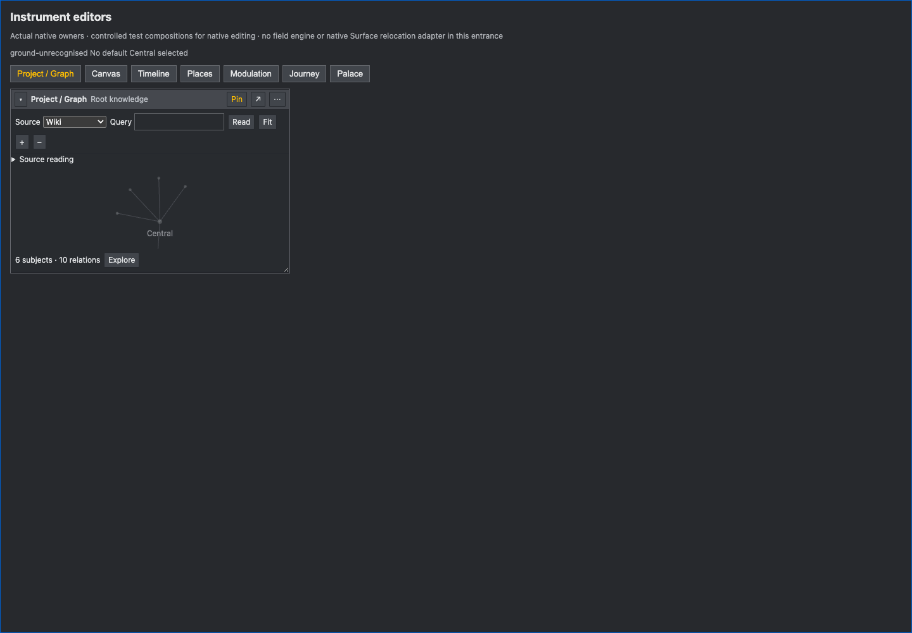

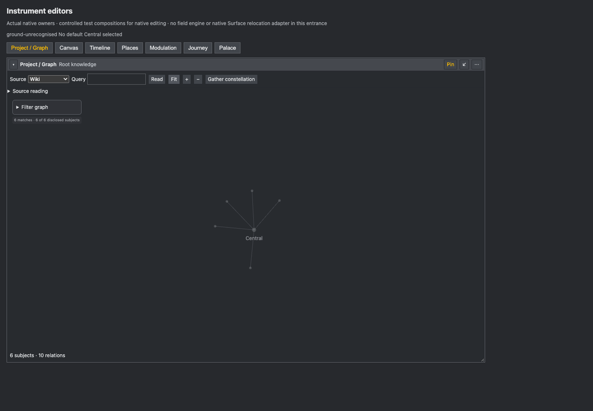
Seven instrument-owned compact/full editors and receiving adapters are ready for the existing shell: Project / Graph, Canvas, Timeline, Journey, Places, Palace and Modulation. They retain one native binding through depth changes and use the current controllers, models and operations.
Open the running editor entrance · Run and source · Original targets and adoption · Exact receiving changes · Structured result
Integration-ready additive code in packages/instrument-editors. The existing session still owns shared installation, rack and Browser routing, state, native windows and processing. Full programme target acceptance remains open.
Strict TypeScript also passes. Checks use real native edit/readback, CAS, compensating history, actual recovery journals, owner models and retained input.
Palace · Modulation · Recovery · Receiving
Compact/full writes, fold/reopen, resizing, pinned targets, same-ID foreign Scene refusal, stable glyph state identity and native Palace composition. Research movement passes; a refused material save preserves its input.
Native editor walk · Research walk · Graph and candidate boundary
Six documents and six journals recover exactly. Two pending proposals retain their submitted input without replay. The component entrance reopens without changing documents or journals.
Process restart · Reopened components · Initial failure and repair
The package and shell share agent/o-i-20261007-1639. Granular production source exports and the Vite adapter use the receiving host’s canonical React, native research modules and a complete offline MapLibre worker. The actual Vite6.4.4 resolver and worker rendering/data update/resize pass; strict receiving configuration types pass.
Independent review caught the worker alias and host runtime defects; the earlier failed artifacts are retained. Palace now consumes the current authoring revision and pending-work contract. Its room/name draft remains on its captured basis. Shared shell registration and native Surface/window acknowledgement remain explicit receiving work.
Actual receiving resolver and worker · Independent review and repaired failures · Offline renderer conformance capture
The shipped bridge predates OI_EXPRESSION_HOME and ignored that override. All 33 journals from this packet’s exclusive controlled namespace were preserved, copied through native CAS into the isolated OI_HOME, and removed from the default home only after exact disk/readback verification. All 163 unrelated recovery records retained identical hashes. The owner’s bridge on4180 was untouched.
Isolation repair and cleanup · Transferred native work. Launch uses both OI_HOME and OI_EXPRESSION_HOME. Native operation evidence uses the shipped bridge; the newest kernel source was not rebuilt.
Native fullscreen, popout/redock and detached view restoration require the compiled contribution to be mounted by DetachedFrame and its existing workspace checkpoint owner. The local entrance refuses unavailable placement rather than claiming a window transition. Source-level presentation guards pass; native window acceptance is unverified.
The native research validator must admit the existing bounded TypeScript material schema. The current refusal is Invalid or unbounded research Scene material. Shared native Scene timing/branch commands, renderer visibility/view checkpoints, glyph-input checkpointing, source/provider admission, effective telemetry and Return execution remain explicit ports. These are listed by file and operation in RECEIVING.md.
The actual source relation faculty timed out; the current Wiki still provides available exact provenance. Its inspection-only native fork is disclosed as incomplete and refuses semantic edits. Current running-shell inspection at 127.0.0.1:8787/app/ failed with connection refused; the separate editor entrance and Graph component were verified.
The development entrance now retains the refused research proposal after restart. Its later whole-document saves may continue to refuse until the native material owner admits the schema. This is visible controlled test work, separate from the owner’s live Expressions.
Actual root Wiki, query, neighbourhood, filtering, source access and saved exploration. Native source mutation acceptance remains open.


Actual Wiki composition through the in-tree spatial editor. Controlled native occurrence movement passed; current Rust material admission refuses frames, named views and card sizing, preserving input.
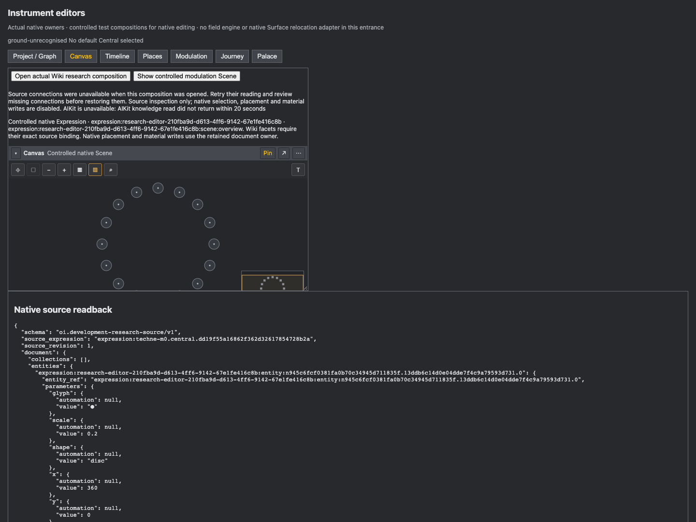
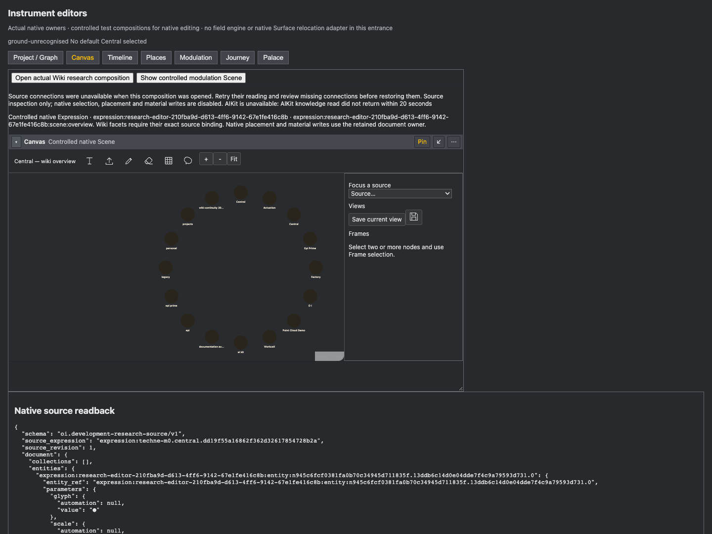
The current source-qualified chronology UI. This actual Wiki carries zero temporal facets; no dates were invented. Populated chronology and shared time-axis acceptance remain open.
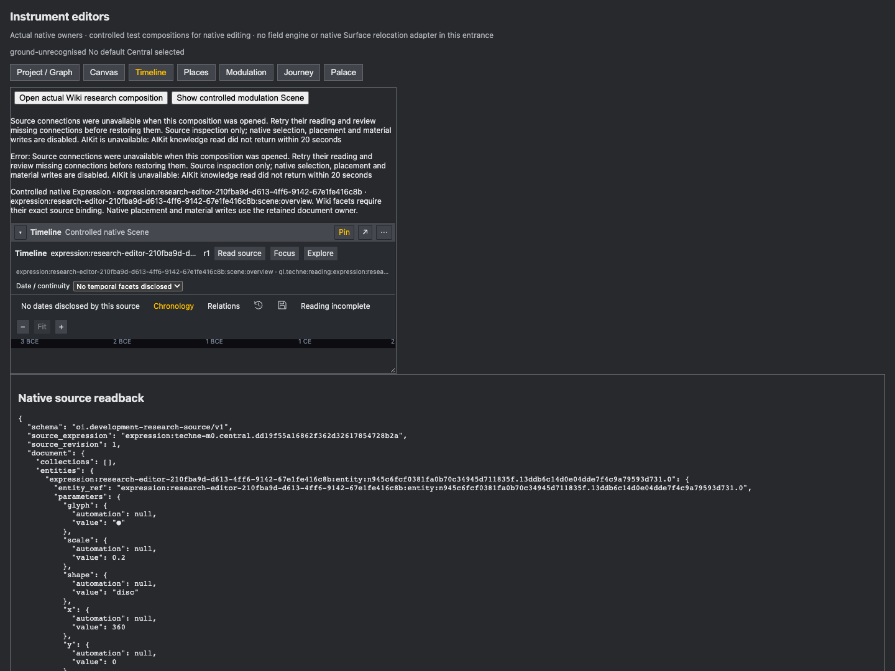
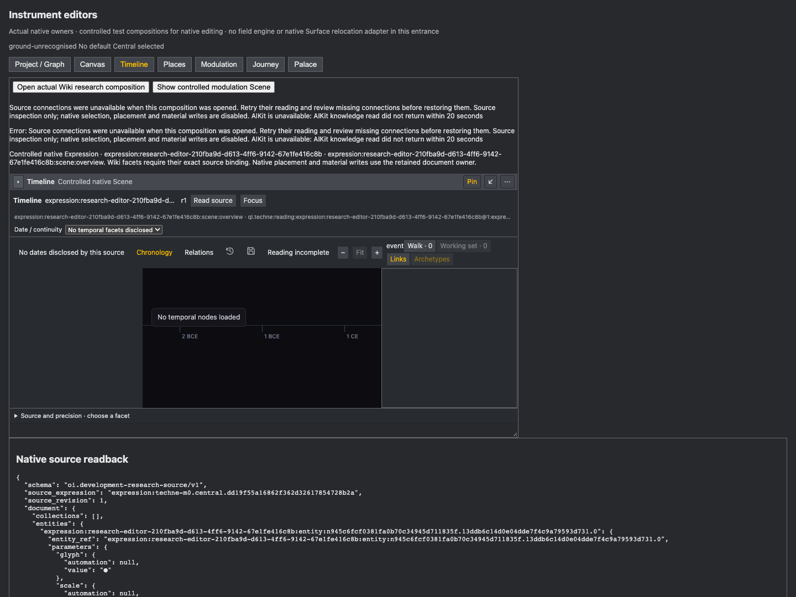
The same native three-state phrase through the existing Glyph Sequence editor. Stable state IDs, hold timing and retained source text were edited and independently read back.
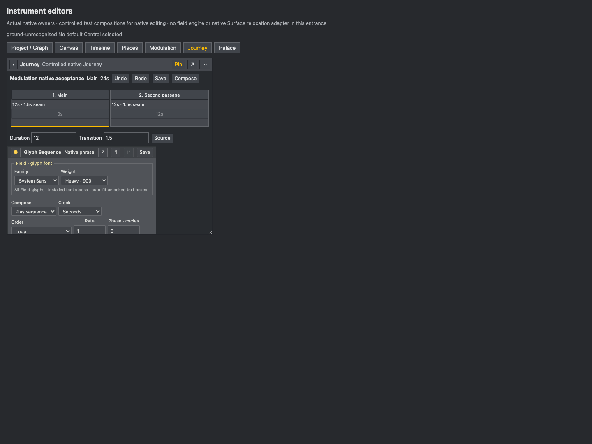
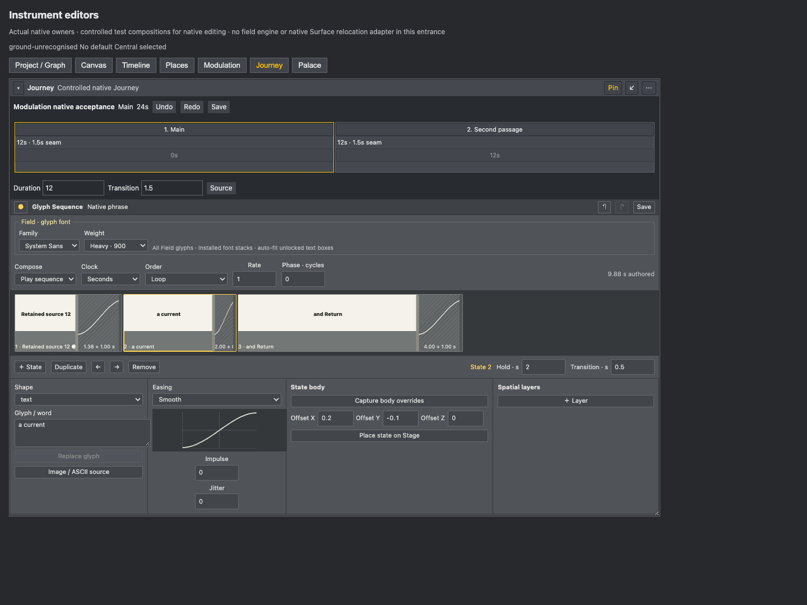
The in-tree MapLibre geography editor and exact source reading. This Wiki carries zero spatial facets; provider and source-defined geographic acceptance remain open.
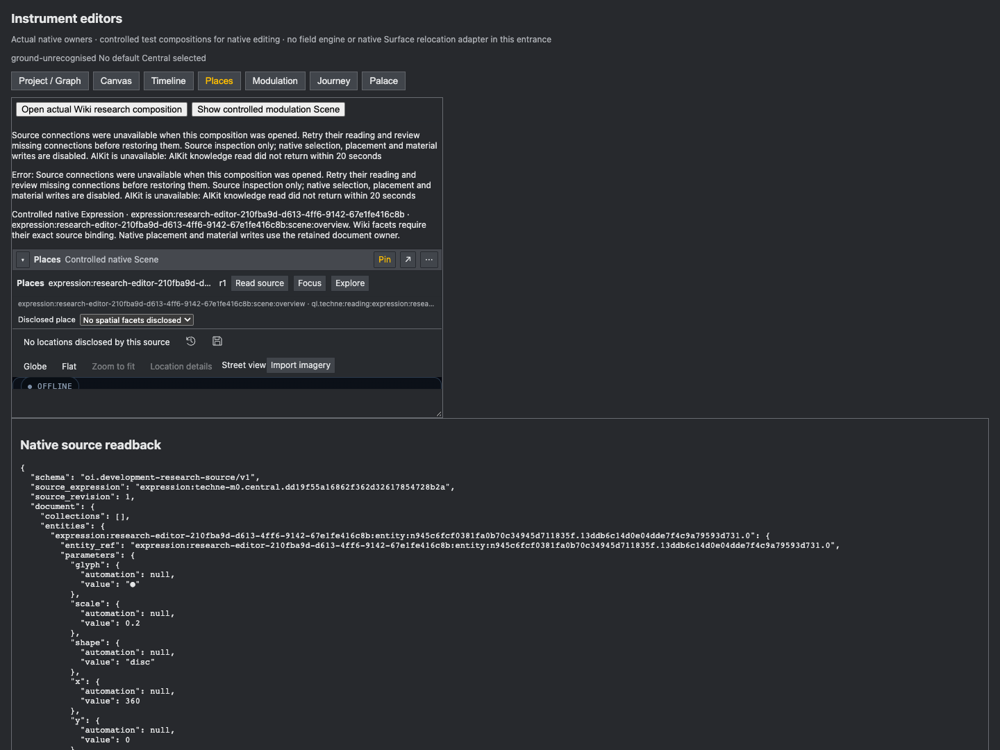
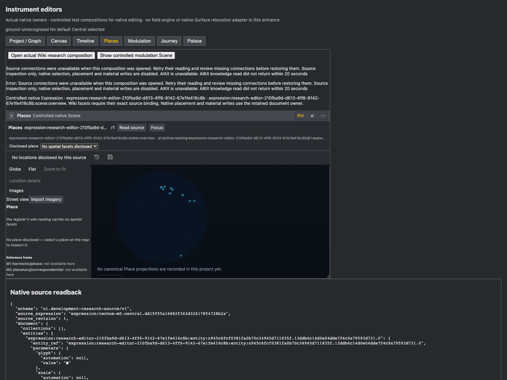
Native rooms, constituents, bodies and managed Portals with CAS and journalled effective readback. Integral composition, navigation, bookmarks and Return routing retain their disclosed native contexts.
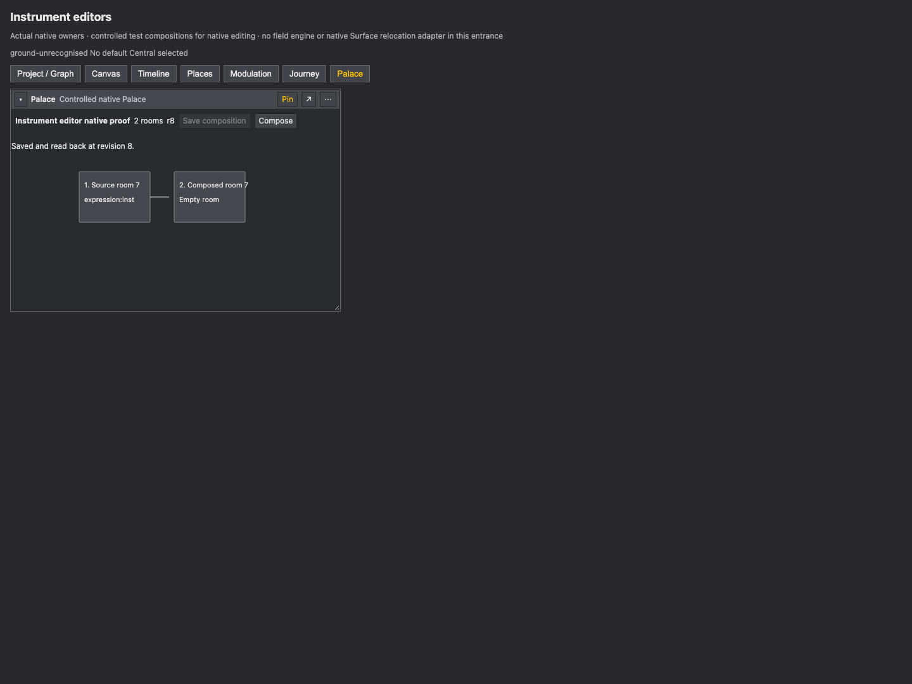
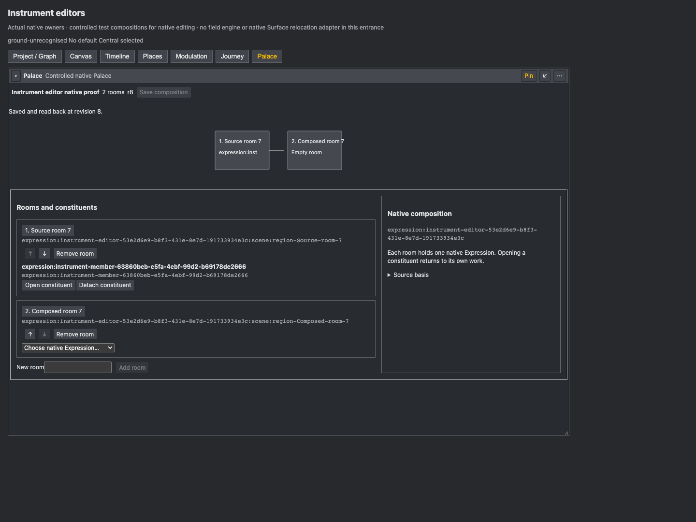
Current native source graphic, exact values and independently editable following target range. Source and follower writes passed. Processing telemetry requires the field engine.
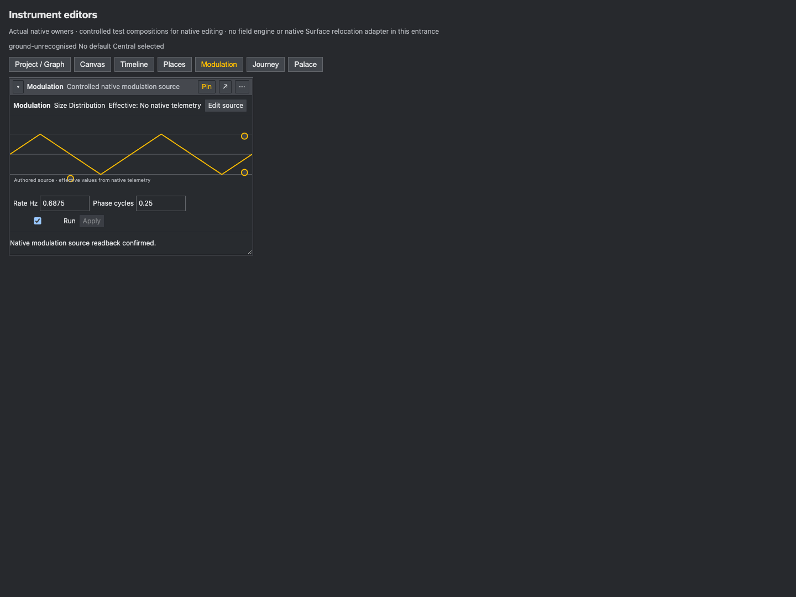
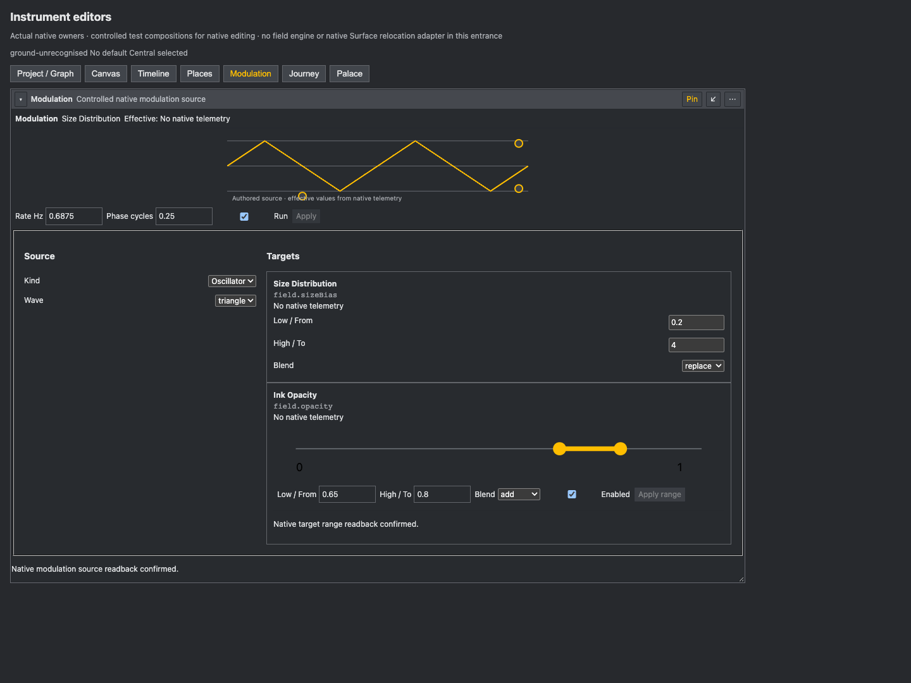
Adopted GraphCanvas, GraphFilters, WikiFactsProvider and WikiConstructionPanel; InstrumentCanvas and researchInstruments with the current chronology and MapLibre implementation; expressionTiming and the existing GlyphSequenceEditor; native Palace composition/SceneBody/Portal and integral navigation; current automation groups, native preview and retained editor; DocumentStore, NativeWorking, Surface and contribution contracts.
Selected external implementations were studied for missing behaviour; no external implementation or asset was copied. Original target IDs and applicable source terms are retained. The Ableton original-resolution device, Session and Arrangement captures were inspected; remaining folded/custom-window recording and full Obsidian capture acceptance is still open.
The editor foundation is committed as d195306a3 on the same branch as the shell foundation and native joins; no cherry-pick is required. The owner explicitly commissioned coordination with the UI shell chat. Its receiving changes remain owned there, with the exact ports in RECEIVING.md and the existing programme handoff. No shared product file was edited by this lane.